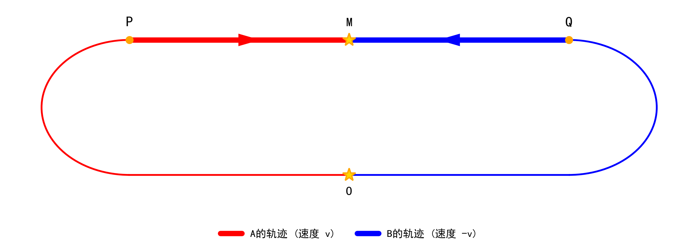

1 对称双生子实验
相对论, 麦克斯韦方程组, 洛伦兹变换, 协变性, 电磁场张量
本章设计一个完全镜像对称的双生子实验，检验“钟慢效应”这一测量结果与随身时钟物理过程之间的关系。
1.1 实验过程
定义 1.1 (实验对象) 设惯性参考系 S 中存在两个质点 A 和 B。在时空原点 O 处，A 与 B 相遇并完成时钟对表。设此时 S 系的坐标时 t=0，两者的随身时钟时（携带的时钟读数）分别记为 \tau_{A} 和 \tau_{B}，且设 \tau_{A} = \tau_{B} = 0。
定义 1.2 (路径分段) 从 O 点出发，A 和 B 分别沿两条完全镜像对称的空间路径运动，在时空点 M 再次相遇。其路径分为两个阶段：
- 弧线段 O \rightarrow P 与 O \rightarrow Q：A 经过弧线到达点 P，B 经过完全镜像的弧线到达点 Q。这两段过程包含了加速与转向。
- 直线段 P \rightarrow M 与 Q \rightarrow M：设 A 到达 P 点后，从点 P 开始以恒定速度 v 沿直线向 M 运动，B 到达 Q 点后，从点 Q 开始以恒定速度 -v 沿直线向 M 运动。

公理 1.1 (对称性公理) 根据实验设定，路径 O \rightarrow P \rightarrow M 与 O \rightarrow Q \rightarrow M 关于中心轴 OM 完美镜像对称。即：A 和 B 的物理经历在空间几何与动力学上完全等价。这一对称性在逻辑上确立了 A 与 B 的身份平等与可互换性。
1.2 钟慢效应
本章只研究路径分段（定义 1.2）中第 2 阶段直线段的惯性运动过程。
在 A 的静止参考系 S_A 中，B 以相对速度 v_{B/A} 运动。根据洛伦兹变换，A 测量 B 的时间会发生膨胀 式 1.1。
\Delta t_A = \gamma \left( \Delta t_B + \frac{v_{B/A} \Delta x_B}{c^2} \right) \quad \Longrightarrow \quad \Delta t_B = \frac{1}{\gamma} \Delta t_A \tag{1.1}
式 1.1 中，B 的静止位置处\Delta x_B = 0，\Delta t_B 是 A 在 S_A 系中通过洛伦兹变换计算出的时间， 揭示了A 测量 B 的时间流逝更慢。同理，在 B 的静止参考系 S_B 中，B 也会得出 A 的时间流逝更慢的结论。
1.3 对称性约束
根据 公理 1.1（对称性公理），A 和 B 经历了完全镜像对称的物理过程。在 M 点相遇时，两者随身时钟时相等，即 式 1.2 。
\tau_{A} = \tau_{B} \tag{1.2}
1.4 实验结论
在满足狭义相对论条件的前提下，狭义相对论测量时得到的“时间不一致”，与对称性确定的“随身时钟时相等”发生了冲突。这说明：狭义相对论测量出的时间差异，并不等同于物理上时钟实际经历的差异。“钟慢效应”是特定理论下的测量结果，它不等同于随身时钟读数的物理过程的真实发生。